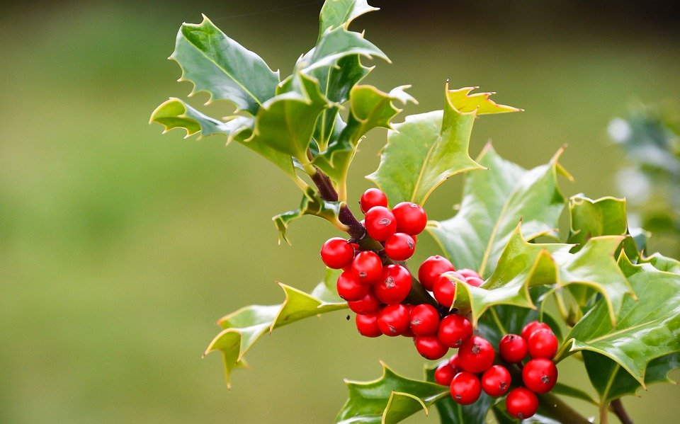

ヒイラギ
クリスマスリースなどにも使われるヒイラギ。なんとなく、冬をイメージしてしまいますね。ヒイラギはキンモクセイに似た甘い香りがする花を咲かせるため、「歓迎」という花言葉になったと言われています。その他にも、「保護」「用心深さ」等の花言葉があります。
クリスマスリースなどにも使われるヒイラギ。なんとなく、冬をイメージしてしまいますね。ヒイラギはキンモクセイに似た甘い香りがする花を咲かせるため、「歓迎」という花言葉になったと言われています。その他にも、「保護」「用心深さ」等の花言葉があります。